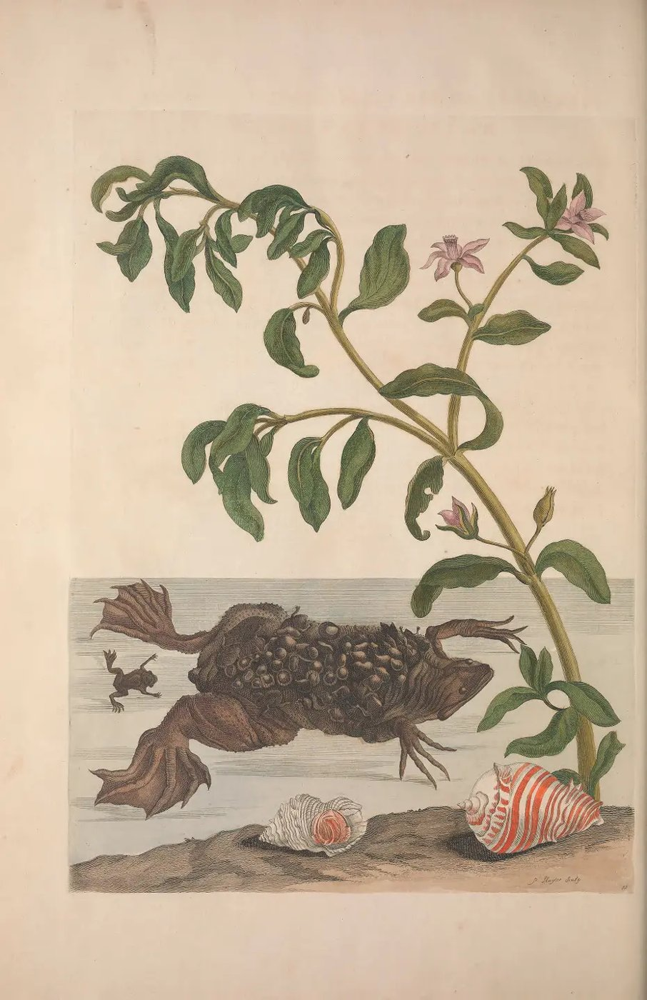

Metamorphosis insectorum Surinamensium, Plate 59
Maria Sibylla Merian · 1705 · Hand-coloured engraving · Smithsonian Libraries and Archives
Free to use
This is the fifty-ninth of the book's sixty plates. Merian's text calls the Surinam toad a fitting close to her work on insects: the female carries her young in her back, and when Merian saw them breaking out she put the mother and the half-emerged young into brandy. The shells below held hermit crabs, fished up from the sea floor for her.